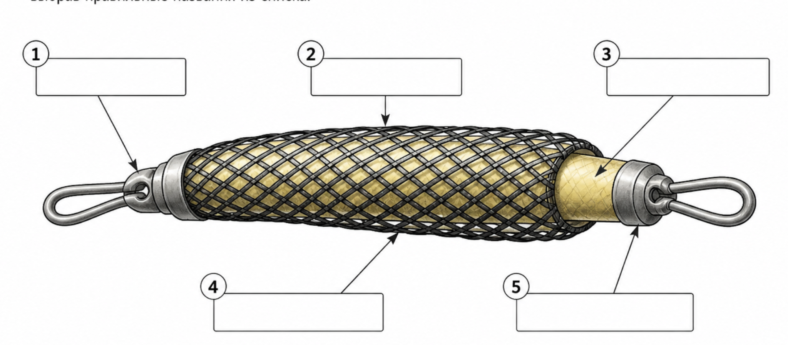

Тірі ағзалардың қозғалысын зерттейтін интерактивті оқулық
Биомеханика — тірі ағзалардың қозғалыс мүмкіндіктері мен қозғалыс әрекетін зерттейтін ғылым саласы. Ең үлкен практикалық қызығушылық адам мен жоғары сатыдағы жануарлардың қозғалысын зерттеуге бағытталған. Жануарлардың қозғалысы туралы алғашқы еңбектерді Аристотель (б.з.д. 384–322 жж.) жазған.
Биомеханиканың дамуына Гален, Леонардо да Винчи, Микеланджело, Джованни Альфонсо Борелли сияқты ғалымдар үлкен үлес қосты. Одан кейін И.М. Сеченов, П.Ф. Лесгафт, А.А. Ухтомский, Н.А. Бернштейн сияқты ғалымдар биомеханиканың ғылым ретінде дамуына ықпал етті.
Бұл бөлімде біз келесі құрылымдарды қарастырамыз: ауа бұлшықеттері, нитинол сымы.
Ауа бұлшықеті — 1950-жылдары Дж. Л. Мак Киббен ұсынған қарапайым құрылғы. Биологиялық бұлшықет сияқты, ауа бұлшықеті белсендірілген кезде жиырылады. Ол биологиялық бұлшықеттің дәл көшірмесіне жақын болғандықтан, зерттеушілерге тірі бұлшықеттердің биомеханикалық және иннервациялық процестерін модельдеуге мүмкіндік береді.
Артықшылықтары: жеңіл салмақ; икемді құрылым; үлкен күш/салмақ қатынасы (400:1); ұзақ уақыт бұралуға төзімділік; арнайы бекіту параллельдігін талап етпейді.
Нитинол — «пішін жадысы» қасиеті бар қорытпа. Қыздырылған кезде ол бастапқы ұзындығының шамамен 10%-ына дейін қысқара алады және қайтадан өзінің бастапқы пішінін қалпына келтіреді.

Созыламын, жиырылам, Күш беріп мен қимылға. Ауа кірсе — қысқарам, Ұқсаймын мен бұлшыққа. Роботтарда қолданам, Қолға ұстап жасайсың. Мен не?
Пластилиннен жасалған ауа бұлшықеті — бұл қарапайым тәжірибелік модель. Ол шынайы жасанды бұлшықеттің (МакКиббен бұлшықеті) қалай жұмыс істейтінін көрсету үшін қолданылады.
💡 Неге бұлай болады: Ішіндегі ауа кеңейген кезде, сыртқы тор оны шектейді → сондықтан ұзындығы қысқарып, бұлшықет сияқты жұмыс істейді.
| Критерий | Алынған балл | Макс балл |
|---|---|---|
| Үй жұмысы (Коллаж) | 0 | 2 |
| Сәйкестендіру тапсырмалары (1,2,3) | 0 | 3 |
| Сурет бөліктерін белгілеу | 0 | 2 |
| Жұмбақты шешу | 0 | 1 |
| Практикалық модель | 0 | 2 |
| ЖАЛПЫ БАЛЛ | 0 | 10 |
Оқушы:
Мысалы: “ақылды қолғап”, “көмекші робот” т.б.
Бағалау критерийі (2 ұпай)